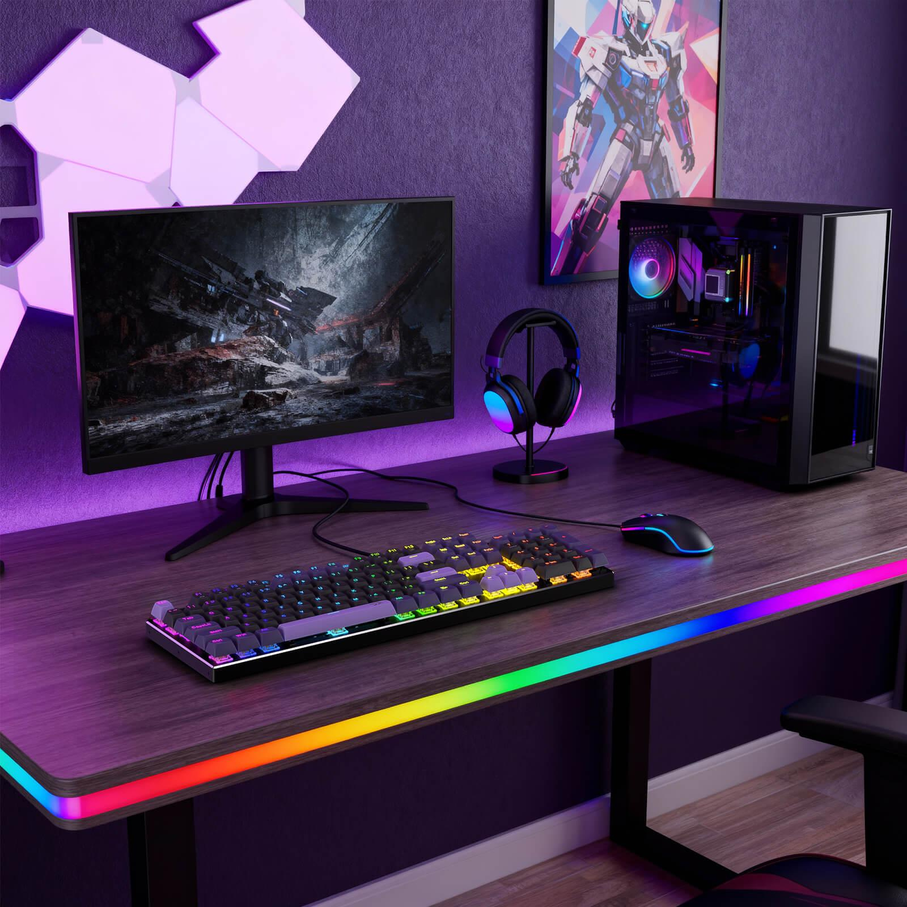
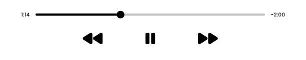

2. Programar
Me gusta crear páginas web y aprender nuevos lenguajes de programación. Para aprender utilizo páginas como MDN Web Docs.

En esta página comparto mis pasatiempos favoritos y el tiempo que les dedico. Haz clic en cualquiera de ellos para ir directamente a su sección:
Me encanta explorar mundos virtuales y jugar partidas competitivas con amigos. Es mi forma favorita de desconectar.

Me gusta crear páginas web y aprender nuevos lenguajes de programación. Para aprender utilizo páginas como MDN Web Docs.
Escucho música mientras estudio, juego o programo. Me ayuda a concentrarme y a relajarme.

| Afición | Frecuencia | Interés |
|---|---|---|
| Videojuegos | Diaria | Alto |
| Programar | Semanal | Alto |
| Escuchar música | Diaria | Medio |